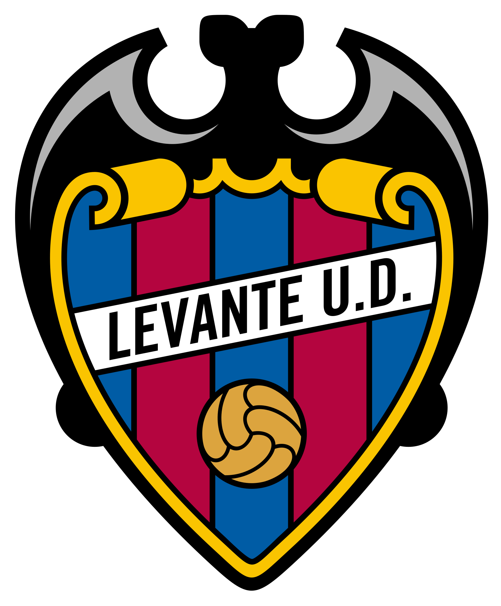
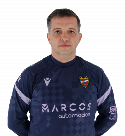
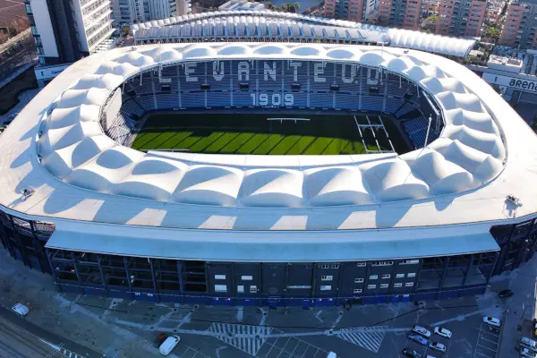

Treinador: Luís Castro
Luís Castro é um treinador português nascido em Vila Real, reconhecido pela sua serenidade e rigor metodológico. Destacou-se em clubes como o Shakhtar Donetsk e o Botafogo antes de assumir o comando do Levante UD

Estádio: Estadi Ciutat de València
O Estadi Ciutat de València é um recinto desportivo espanhol localizado em Valência, conhecido pela sua atmosfera vibrante, moderna e acolhedora. Destacou-se pelas suas recentes renovações estruturais antes de se consolidar como o baluarte estratégico onde o Levante UD disputa os seus jogos em casa.

Estilo de Jogo:
No Levante, o treinador português Luís Castro implementou um modelo de jogo baseado numa identidade ofensiva e na posse de bola, adaptando os seus princípios clássicos à urgência competitiva da equipa na La Liga.
"El club de los niños!"